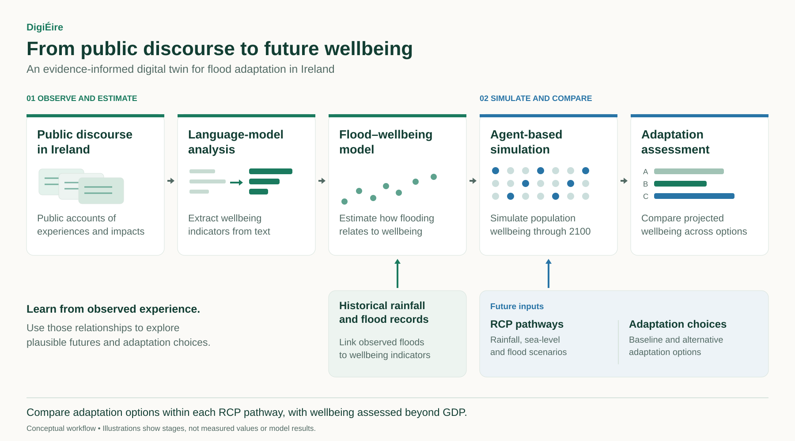
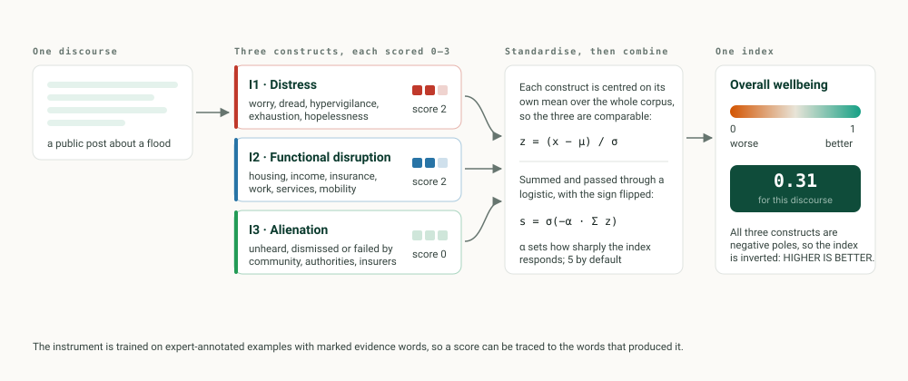

DigiÉire
Informed by the international debate for a ‘beyond GDP’ framing of climate change within policy, the goal of this project is to produce a Digital Twin for Ireland to aid climate-change adaptation planning that maximises the wellbeing of the Irish population over time.

“Wellbeing” only becomes measurable once it is broken into things a reader could disagree with. We use three negative-pole constructs, each scored 0–3 on a piece of public discourse, and combine them into a single index where higher means better.
